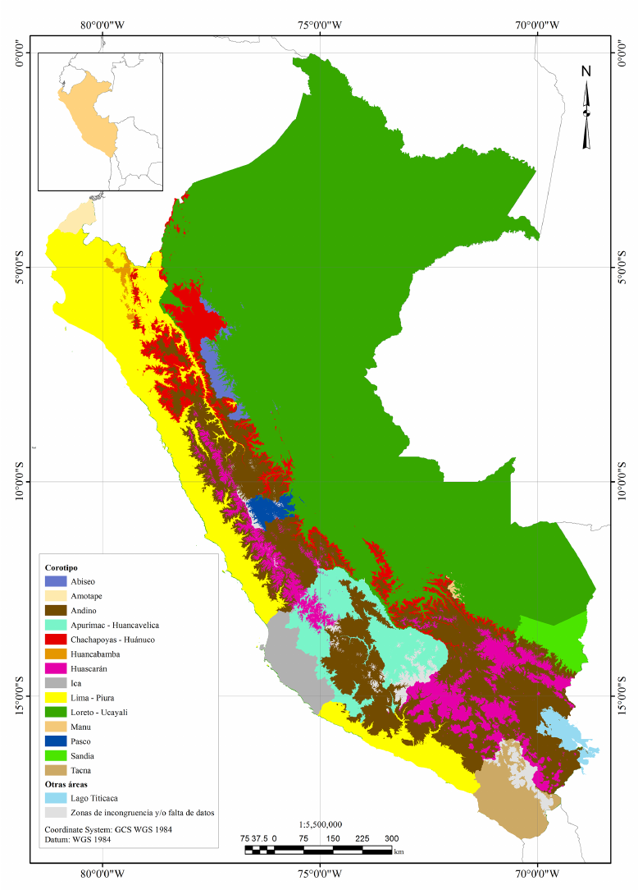
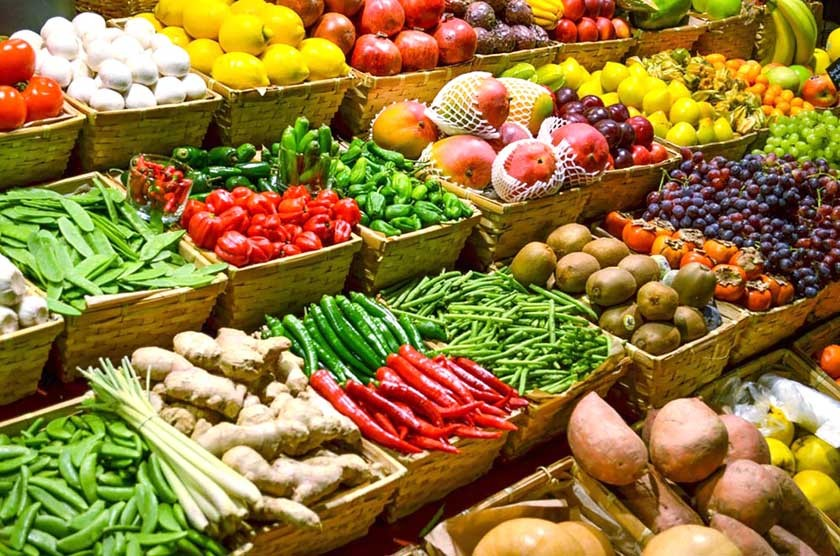

La agricultura en el Perú
Esta gran labor como es la agricultura se nos fue heredada desde el tiempo de los incas, pero poco a poco esta costumbre se va perdiendo, desde la llegada de los españoles a nuestras tierras, quienes dejaron esta gran labor, por centrarse en la minería.
Datos
La agricultura ha sido la actividad económica tradicional del Perú prehispánico, donde se cultivó de forma intensa productos como el maíz y la papa.
La agricultura esta muy involucrada en los diferentes aspectos ambientales como: la tierra, el aire y el agua.
La Agricultura en la Región Andina del Perú
En esta región se encontran diferentes productos, como son:
La papa: es uno de los más abundantes productos de nuestro país, y es uno de los principales ingresantes de economía a nuestro país, ya sea dentro, como fuera.
El maíz: utilizado para la elaboración de muchos alimentos nutritivos y balanceados, como son: el choclo, la cancha, tamales, humas, entre otras.
La Agricultura en la Costa Peruana
Sus principales cultivos son:
Azúcar: es obtenida mediante un proceso industrial de la caña de azúcar, utilizado muchas veces para ayudar a obtener un mejor sabor a bebidas.
Algodón: al pasar por un proceso industrial este se transforma en hilo, el cual es utilizado para la textileria en nuestro país.
La Agricultura en la Amazonía Peruana
Contiene productos de distinta variedad como son:
Frutales: entre los cuales tenemos: el camu camu, aguaje, que son las principales frutas alimenticias de su región.
Entre otros productos de la selva, se puede encontrar: la papa, aguacate, pera, manzana, sandía, papaya, chirimoya, entre otros.